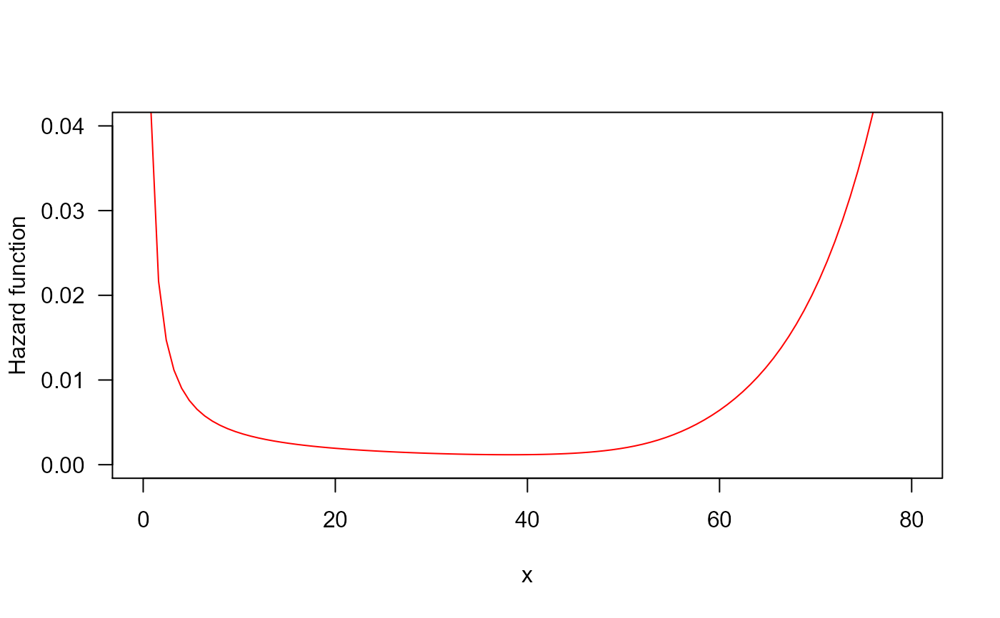
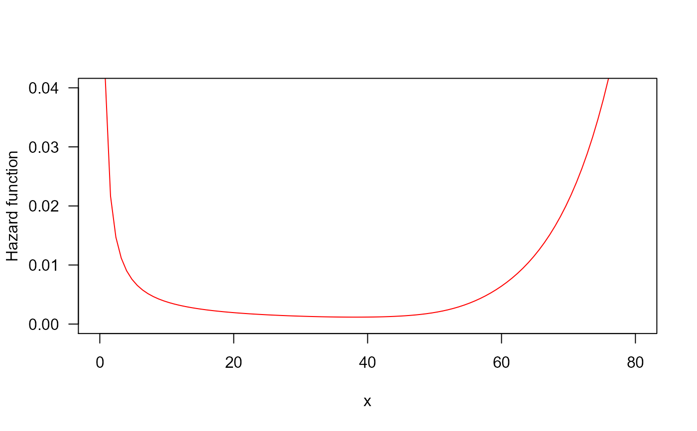

Initial values and search region for Odd Weibull distribution
Source:R/initValuesOW_TTT.R
initValuesOW_TTT.RdThis function can be used so as to get suggestions about initial values
and the search region for parameter estimation in OW distribution.
initValuesOW_TTT(
formula,
data = NULL,
local_reg = loess.options(),
interpolation = interp.options(),
...
)Arguments
- formula
an object of class
formulawith the response on the left of an operator~. The right side must be1.- data
an optional data frame containing the response variables. If data is not specified, the variables are taken from the environment from which
initValuesOW_TTTis called.- local_reg
a list of control parameters for LOESS. See
loess.options.- interpolation
a list of control parameters for interpolation function. See
interp.options.- ...
further arguments passed to
TTTE_Analytical.
Details
This function performs a non-parametric estimation of the empirical total time on test (TTT) plot. Then, this estimated curve can be used so as to get suggestions about initial values and the search region for parameters based on hazard shape associated to the shape of empirical TTT plot.
Examples
# Example 1
# Bathtuh hazard and its corresponding TTT plot
y1 <- rOW(n = 1000, mu = 0.1, sigma = 7, nu = 0.08)
my_initial_guess1 <- initValuesOW_TTT(formula=y1~1)
summary(my_initial_guess1)
#> --------------------------------------------------------------------
#> Initial Values
#> sigma = 5
#> nu = 0.1
#> --------------------------------------------------------------------
#> Search Regions
#> For sigma: all(sigma > 1)
#> For nu: all(nu < 1/sigma)
#> --------------------------------------------------------------------
#> Hazard shape: Bathtub
plot(my_initial_guess1, par_plot=list(mar=c(3.7,3.7,1,2.5),
mgp=c(2.5,1,0)))
#> Warning: The `par_plot` argument of `plot.HazardShape()` is deprecated as of EstimationTools 4.0.0.
#> Please use `plot.HazardShape()` instead.
 curve(hOW(x, mu = 0.022, sigma = 8, nu = 0.01), from = 0,
to = 80, ylim = c(0, 0.04), col = "red",
ylab = "Hazard function", las = 1)

# Example 2
# Bathtuh hazard and its corresponding TTT plot with right censored data
if (FALSE) {
y2 <- rOW(n = 1000, mu = 0.1, sigma = 7, nu = 0.08)
status <- c(rep(1, 980), rep(0, 20))
my_initial_guess2 <- initValuesOW_TTT(formula=Surv(y2, status)~1)
summary(my_initial_guess2)
plot(my_initial_guess2, par_plot=list(mar=c(3.7,3.7,1,2.5),
mgp=c(2.5,1,0)))
curve(hOW(x, mu = 0.022, sigma = 8, nu = 0.01), from = 0,
to = 80, ylim = c(0, 0.04), col = "red",
ylab = "Hazard function", las = 1)
}
curve(hOW(x, mu = 0.022, sigma = 8, nu = 0.01), from = 0,
to = 80, ylim = c(0, 0.04), col = "red",
ylab = "Hazard function", las = 1)

# Example 2
# Bathtuh hazard and its corresponding TTT plot with right censored data
if (FALSE) {
y2 <- rOW(n = 1000, mu = 0.1, sigma = 7, nu = 0.08)
status <- c(rep(1, 980), rep(0, 20))
my_initial_guess2 <- initValuesOW_TTT(formula=Surv(y2, status)~1)
summary(my_initial_guess2)
plot(my_initial_guess2, par_plot=list(mar=c(3.7,3.7,1,2.5),
mgp=c(2.5,1,0)))
curve(hOW(x, mu = 0.022, sigma = 8, nu = 0.01), from = 0,
to = 80, ylim = c(0, 0.04), col = "red",
ylab = "Hazard function", las = 1)
}